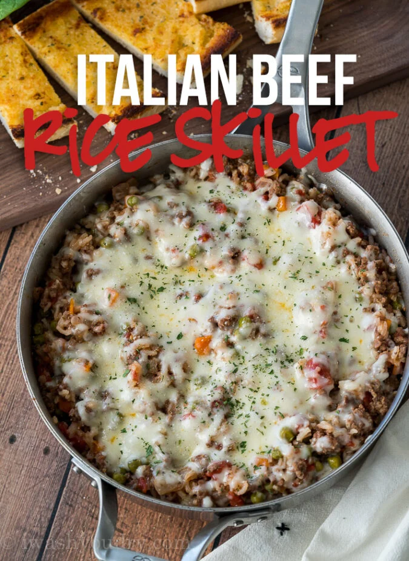

This hearty Italian Beef and Rice Skillet is made in less than 30 minutes. I love recipes like this because they come together so easy. There is little preparation and even less dishes.
In a heated skillet, brown the ground beef until there is no more pink. Drain the excess fat out of the pan.
Return the skillet to the stove and add in the rest of the ingredients except the mozzarella. Stir everything together. Bring the mixture to a light boil, then reduce the heat to a simmer. Cover and let everything cook until the rice is nice and tender.
This should take about 17 minutes.
Once everything is cooked, fluff up the rice with a fork and top off the skillet with the mozzarella cheese. For a melted effect, cover the pan for an extra 3 minutes. Top with chopped parsley if desired.
Serve or store in the freezer for up to 3 months.